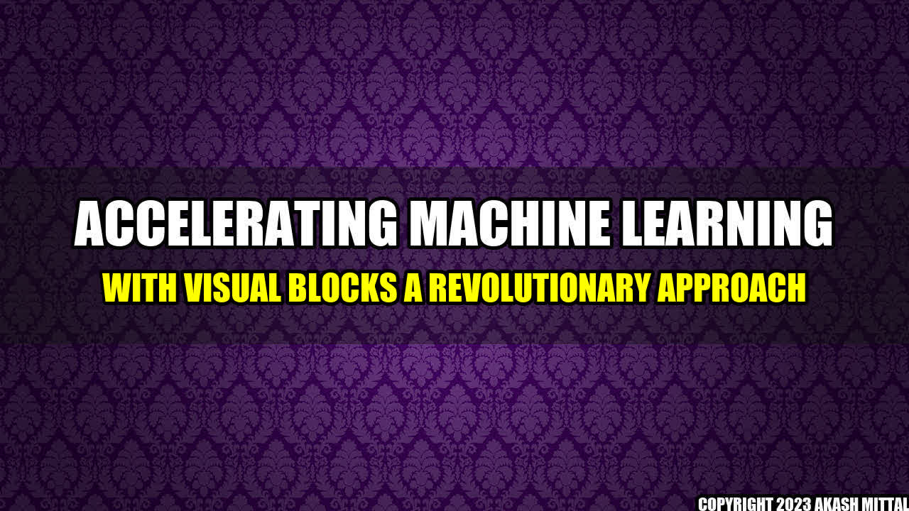

By Akash Mittal
Accelerating Machine Learning with Visual Blocks: A Revolutionary Approach

The Story of a Frustrated Data Scientist
John was a data scientist working in a renowned organization. He was passionate about machine learning and had a lot of ideas to implement. But every time he started coding, he felt frustrated. He had to write a lot of code and spend a considerable amount of time testing it. Also, he had to keep himself updated with the latest libraries and frameworks. The whole process was time-consuming and not very productive. But then, he stumbled upon Visual Blocks, and everything changed.
How Visual Blocks Accelerates Machine Learning Prototyping?
Visual Blocks is a set of interactive tools that allow data scientists to create and test machine learning models without writing a single line of code. Let's look at some examples:
- Classification and Regression Task: With Visual Blocks, you can define your dataset, choose a task, and select a model. Then, you can connect the blocks to build the model architecture, configure it, and train it. You can visualize the results and improve the performance by tweaking the hyperparameters. All this can be done in a few clicks and without any coding.
- Deep Learning Models: Visual Blocks supports deep learning models like Convolutional Neural Networks (CNNs), Recurrent Neural Networks (RNNs), and Generative Adversarial Networks (GANs). You can create complex architectures and test them with your dataset. You can add layers, define activation functions, and experiment with different optimization algorithms.
Conclusion
Visual Blocks is a game-changer for machine learning prototyping. Here are the key takeaways:
- Visual Blocks enables data scientists to create and test machine learning models without writing code, saving time and effort.
- Visual Blocks supports various tasks, models, and architectures, making it a flexible and versatile tool.
- Visual Blocks enhances productivity and creativity by removing coding barriers and enabling data scientists to focus on the concepts and ideas.
References:
Visual Blocks for ML: Accelerating machine learning prototyping with interactive tools.
Further Readings:
- Introduction to Machine Learning with Visual Blocks
- Visual Blocks vs. Traditional Coding: A Comparative Study
- Case Studies of Visual Blocks in Real-World Applications
Hashtags:
#VisualBlocks #MachineLearning #Prototyping #InteractiveTools #Accelerate #Productivity
Social
Share on Twitter Share on LinkedIn